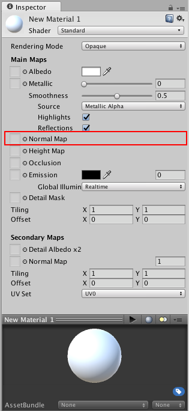
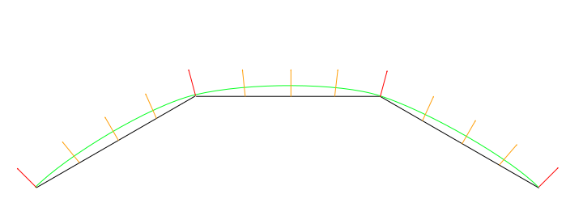
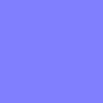
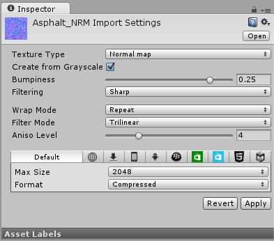
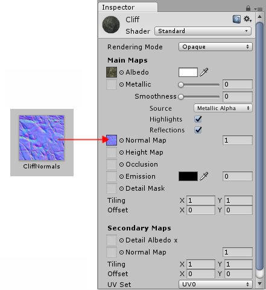

Normal map (Bump mapping)

Normal maps are a type of Bump Map. They are a special kind of texture that allow you to add surface detail such as bumps, grooves, and scratches to a model which catch the light as if they are represented by real geometry.
For example, you might want to show a surface which has grooves and screws or rivets across the surface, like an aircraft hull. One way to do this would be to model these details as geometry, as shown below.

Depending on the situation it is not normally a good idea to have such tiny details modelled as "real" geometry. On the right you can see the polygons required to make up the detail of a single screwhead. Over a large model with lots of fine surface detail this would require a very high number of polygons to be drawn. To avoid this, we should use a normal map to represent the fine surface detail, and a lower resolution polygonal surface for the larger shape of the model.
If we instead represent this detail with a bump map, the surface geometry can become much simpler, and the detail is represented as a texture which modulates how light reflects off the surface. This is something modern graphics hardware can do extremely fast. Your metal surface can now be a low-poly flat plane, and the screws, rivets, grooves and scratches will catch the light and appear to have depth because of the texture.

In modern game development art pipelines, artists will use their 3D modelling applications to generate normal maps based on very high resolution source models. The normal maps are then mapped onto a lower-resolution game-ready version of the model, so that the original high-resolution detail is rendered using the normalmap.
How to create and use Bump Maps
Bump mapping is a relatively old graphics technique, but is still one of the core methods required to create detailed realistic realtime graphics. Bump Maps are also commonly referred to as Normal Maps or Height Maps, however these terms have slightly different meanings which will be explained below.
What are Surface Normals?
To really explain how normal mapping works, we will first describe what a "normal" is, and how it is used in realtime lighting. Perhaps the most basic example would be a model where each surface polygon is lit simply according to the surface angles relative to the light. The surface angle can be represented as a line protruding in a perpendicular direction from the surface, and this direction (which is a vector) relative to the surface is called a "surface normal", or simply, a normal.

In the image above, the left cylinder has basic flat shading, and each polygon is shaded according to its relative angle to the light source. The lighting on each polygon is constant across the polygon's area because the surface is flat. Here are the same two cylinders, with their wireframe mesh visible:

The model on the right has the same number of polygons as the model on the left, however the shading appears smooth - the lighting across the polygons gives the appearance of a curved surface. Why is this? The reason is that the surface normal at each point used for reflecting light gradually varies across the width of the polygon, so that for any given point on the surface, the light bounces as if that surface was curved and not the flat constant polygon that it really is.
Viewed as a 2D diagram, three of the surface polygons around the outside of the flat-shaded cylinder would look like this:

The surface normals are represented by the orange arrows. These are the values used to calculate how light reflects off the surface, so you can see that light will respond the same across the length of each polygon, because the surface normals point in the same direction. This gives the "flat shading", and is the reason the left cylinder's polygons appear to have hard edges.
For the smooth shaded cylinder however, the surface normals vary across the flat polygons, as represented here:

The normal directions gradually change across the flat polygon surface, so that the shading across the surface gives the impression of a smooth curve (as represented by the greeen line). This does not affect the actual polygonal nature of the mesh, only how the lighting is calculated on the flat surfaces. This apparent curved surface is not really present, and viewing the faces at glancing angles will reveal the true nature of the flat polygons, however from most viewing angles the cylinder appears to have a smooth curved surface.
Using this basic smooth shading, the data determining the normal direction is actually only stored per vertex, so the changing values across the surface are interpolated from one vertex to the next. In the diagram above, the red arrows indicate the stored normal direction at each vertex, and the orange arrows indicate examples of the interpolated normal directions across the area of the polygon.
What is Normal mapping?
Normal mapping takes this modification of surface normals one step further, by using a texture to store information about how to modify the surface normals across the model. A normal map is an image texture mapped to the surface of a model, similar to regular colour textures, however each pixel in the texture of the normal map (called a texel) represents a deviation in surface normal direction away from the "true" surface normal of the flat (or smooth interpolated) polygon.

In this diagram, which is again a 2D representation of three polygons on the surface of a 3D model, each orange arrow corresponds to a pixel in the normalmap texture. Below, is a single-pixel slice of a normalmap texture. In the centre, you can see the normals have been modified, giving the appearance of a couple of bumps on the surface of the polygon. These bumps would only be apparent due to the way lighting appears on the surface, because these modified normals are used in the lighting calculations.
The colours visible in a raw normal map file typically have a blueish hue, and don't contain any actual light or dark shading - this is because the colours themselves are not intended to be displayed as they are. Instead, the RGB values of each texel represent the X,Y & Z values of a direction vector, and are applied as a modification to the basic interpolated smooth normals of the polygon surfaces.

This is a simple normal map, containing the bump information for some raised rectangles and text. This normal map can be imported into Unity and placed into Normal Map slot of the Standard Shader. When combined in a material with a colour map (the Albedo map) and applied to the surface of of the cylinder mesh above, the result looks like this:

Again, this does not affect the actual polygonal nature of the mesh, only how the lighting is calculated on the surfaces. This apparent raised lettering and shapes on the surface are not really present, and viewing the faces at glancing angles will reveal the true nature of the flat surface, however from most viewing angles the cylinder now appears to have embossed detail raised off the surface.
How do I get or make normal maps?
Commonly, Normal Maps are produced by 3D or Texture artists in conjunction with the model or textures they are producing, and they often mirror the layout and contents of the Albedo map. Sometimes they are produced by hand, and sometimes they are rendered out from a 3D application.
How to render normal maps from a 3D application is beyond the scope of this documentation, however the basic concept is that a 3D artist would produce two versions of a model - a very high resolution model containing all detail as polygons, and a lower-res "game ready" model. The high res model would be too detailed to run optimally in a game (too many triangles in the mesh), but it is used in the 3D modelling application to generate the normal maps. The lower-res version of model can then omit the very fine level of geometry detail that is now stored in the normal maps, so that it can be rendered using the normal mapping instead. A typical use case for this would be to show the bumped detail of creases, buttons, buckles and seams on a characters clothing.
There are some software packages which can analyse the lighting in a regular photographic texture, and extract a normalmap from it. This works by assuming the original texture is lit from a constant direction, and the light and dark areas are analysed and assumed to correspond with angled surfaces. However, when actually using a bump map, you need to make sure that your Albedo texture does not have lighting from any particular direction in the image - ideally it should represent the colours of the surface with no lighting at all - because the lighting information will be calculated by Unity according to the light direction, surface angle and bump map information.
Here are two examples, one is a simple repeating stone wall texture with its corresponding normal map, and one is a character's texture atlas with its corresponding normal map:


What's the difference between Bump Maps, Normal Maps and Height Maps?
Normal Maps and Height Maps are both types of Bump Map. They both contain data for representing apparent detail on the surface of simpler polygonal meshes, but they each store that data in a different way.

Above, on the left, you can see a height map used for bump mapping a stone wall. A height map is a simple black and white texture, where each pixel represents the amount that point on the surface should appear to be raised. The whiter the pixel colour, the higher the area appears to be raised.
A normal map is an RGB texture, where each pixel represents the difference in direction the surface should appear to be facing, relative to its un-modified surface normal. These textures tend to have a bluey-purple tinge, because of the way the vector is stored in the RGB values.
Modern realtime 3D graphics hardware rely on Normal Maps, because they contain the vectors required to modify how light should appear to bounce of the surface. Unity can also accept Height Maps for bump mapping, but they must be converted to Normal Maps on import in order to use them.
Why the bluey-purple colours?
Understanding this is not vital for using normal maps! It's ok to skip this paragraph. However if you really want to know: The RGB colour values are used to store the X,Y,Z direction of the vector, with Z being "up" (contrary to Unity's usual convention of using Y as "up"). In addition, the values in the texture are treated as having been halved, with 0.5 added. This allows vectors of all directions to be stored. Therefore to convert an RGB colour to a vector direction, you must multiply by two, then subtract 1. For example, an RGB value of (0.5, 0.5, 1) or #8080FF in hex results in a vector of (0,0,1) which is "up" for the purposes of normal-mapping - and represents no change to the surface of the model. This is the colour you see in the flat areas of the "example" normal map earlier on this page.

A value of (0.43, 0.91, 0.80) gives a vector of (-0.14, 0.82, 0.6), which is quite a steep modification to the surface. Colours like this can be seen in the bright cyan areas of the stone wall normal map at the top of some of the stone edges. The result is that these edges catch the light at a very different angle to the flatter faces of the stones.
Normal maps


How to import and use Normal Maps and Height Maps
A normal map can be imported by placing the texture file in your assets folder, as usual. However, you need to tell Unity that this texture is a normal map. You can do this by changing the "Texture Type" setting to "Normal Map" in the import inspector settings.

To import a black and white heightmap as a normal map, the process is almost identical, except you need to check the "Create from Greyscale" option.

With "Create From Greyscale" selected, a Bumpiness slider will appear in the inspector. You can use this to control how steep the angles in the normalmap are, when being converted from the heights in your heightmap. A low bumpiness value will mean that even sharp contrast in the heightmap will be translated to gentle angles and bumps. A high value will create exaggerated bumps and very high contrast lighting responses to the bumps.

Once you have a normalmap in your assets, you can place it into the Normal Map slot of your Material in the inspector. The Standard Shader has a normal map slot, and many of the older legacy shaders also support normal maps.

If you imported a normalmap or heightmap, and did not mark it as a normal map (By selecting Texture Type: Normal Map as described above), the Material inspector will warn you about this and offer to fix it, as so:

Clicking "Fix Now" has the same effect as selecting Texture Type: Normal Map in the texture inspector settings. This will work if your texture really is a normal map. However if it is a greyscale heightmap, it will not automatically detect this - so for heightmaps you must always select the "Create from Greyscale" option in the texture's inspector window.
Secondary Normal Maps
You may also notice that there is a second Normal Map slot further down in the Material inspector for the Standard Shader. This allows you to use an additional normal map for creating extra detail. You can add a normal map into this slot in the same way as the regular normal map slot, but the intention here is that you should use a different scale or frequency of tiling so that the two normal maps together produce a high level of detail at different scales. For example, your regular normal map could define the details of panelling on a wall or vehicle, with groves for the panel edges. A secondary normal map could provide very fine bump detail for scratches and wear on the surface which may be tiled at 5 to 10 times the scale of the base normal map. These details could be so fine as to only be visible when examined closely. To have this amount of detail on the base normal map would require the base normal map to be incredibly large, however by combining two at different scales, a high overall level of detail can be achieved with two relatively small normal map textures.